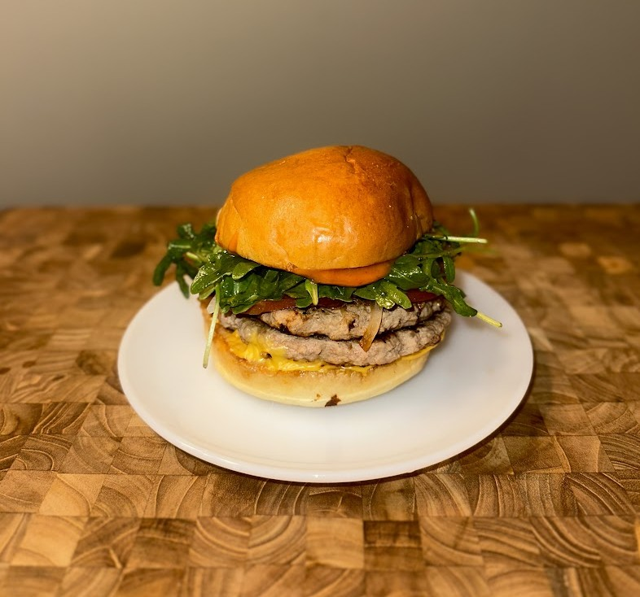

Turkey Smashburger

Ingredients
Ground Turkey
White Onion
American Cheese
Bun
Salt
Burger Sauce
Ketchup
Mayonaise
Mustard
Pickle Juice
Additional Toppings
Instructions
Gently roll ground turkey into quarter-pound balls and set aside
Slice white onion into very thin strips
Get your flat cooking surface very hot
(Cast Iron or Griddles work best, has to be flat & hot)
Place meatballs on surface and season with salt
Sprinkle a handful of slice onions on top of the meatballs
Take a flat spatula and press firmly down to flatten the meatballs into thin patties
Let cook for a few minutes, until edges start to look crispy
Flip patty over and top with cheese
Place bottom bun on top of the cheese and top bun on top of that to steam
Cook for a couple minutes until cheese is melted
Coat bun with burger sauce
Add additional toppings